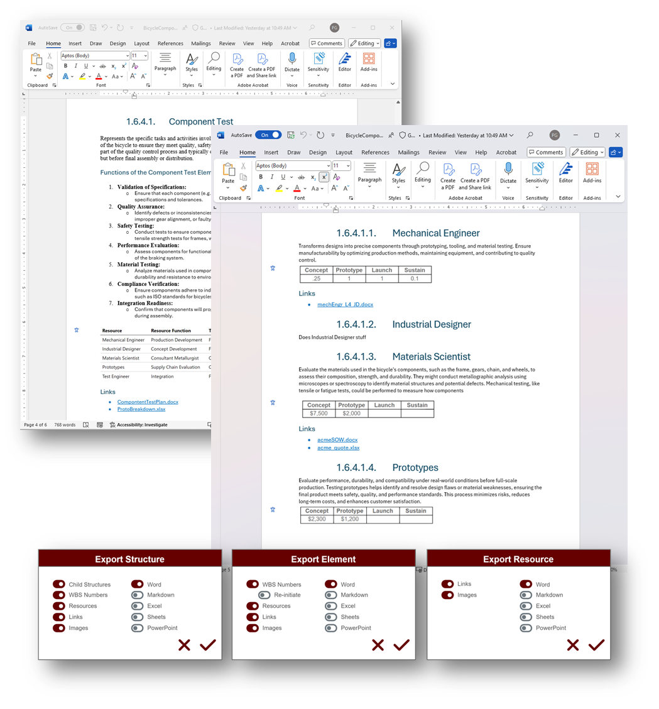

Copyright Notice
© 2024 Paul Galjan. All rights reserved. This project and its contents, including any designs, specifications, and associated materials, are protected by copyright law. Unauthorized use, reproduction, or distribution of this document or any part of its contents is prohibited without the express written permission of Paul Galjan.
Legal Use and Restrictions
This document is intended solely for personal use and may not be shared, reproduced, or modified without prior written consent. Violators may be subject to legal action.
Atlas is a conceptual structure visualization and annotation platform featuring a modular interactive renderer that allows the user to create or calculate multiple structured or unstructured views of their data. These views can be shared with others, and the same data may be represented in different views while maintaining consistency.
The front-end is paired with a simple, flexible and scalable multi-user key/value store for user annotation of the data, along with subsequent reporting.
The PoC is built on, but not dependent on, Markmap (MIT License), a typescript mindmap renderer leveraging YAML-like markup for structure, resulting in simple. human-readable backmatter. It is tolerant of raw markdown, with intelligent parsing of headers and bullets while ignoring tables and base text, along with support for CSS, and allows for initial fold status at the node level, so it's an ideal candidate for initial exploration of the concept. Markmap does not render unstructured datasets or hierarchies deeper than six.
The backend is logically separated from the renderer, maintaining UUIDs and annotated, so markmap can and will co-exist and interoperate with alternative renderers such as drawio (Apache License) or mermaid (MIT License) to address canvas-style, tree-style, workflow, state diagram, ganntt, C4, and deep structure use cases. The same data set can be leveraged in multiple structures, so user could define their own hierarchies or canvases, save and switch between them without impacting the state and content of the objects.

All simulations have excel-generated guids, which are reliable for test purposes but not RFC9562 compliant.
Mock data for these and a variety of structures are provided in the atlas template


